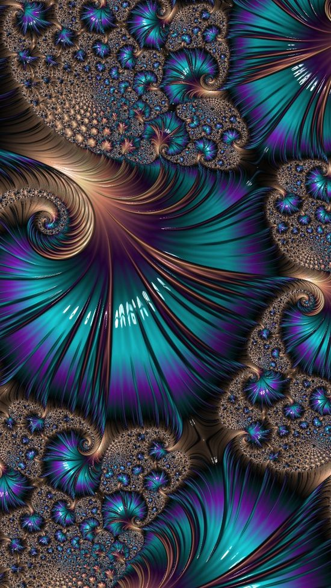

| Un Frattale Digitale |
|---|
|  |
L’arte frattale è una forma di grafica digitale creata attraverso l’uso di software.
Il componente centrale di questo tipo di grafica è l’uso di una particolare equazione matematica per generare un’immagine frattale iniziale. Questa immagine viene quindi utilizzata da un artista in diversi modi, tra cui lo zoom in avanti o indietro, spostare l’immagine all’interno di una cornice e provare diverse iterazioni di colore per creare un pezzo finale.
L’arte frattale è creata attraverso l’uso di un computer ma non è generata dal computer, poichè richiede ancora il lavoro di un artista.
L’idea alla base dell’arte frattale è l’espressione visiva di una complessa equazione matematica in un modo che genera un’immagine auto-simile.
Ciò significa che una piccola sezione dell’immagine assomiglia all’immagine complessiva stessa.
Un esempio di questo nel mondo naturale può essere visto nelle coste che appaiono ruvide e frastagliate se viste da una grande distanza in alto, e ogni piccola sezione più vicina continua ad avere un aspetto approssimativo simile.
I frattali utilizzati per creare l’arte frattale hanno una natura auto-simile, in modo che un piccolo aspetto dell’immagine sia simile nell’aspetto al tutto. Questa auto-somiglianza è accoppiata al fatto che i frattali sono teoricamente di dimensioni infinitamente piccole, in modo che un artista possa ingrandire un’immagine per sempre. Fondamentalmente viene utilizzata un’equazione matematica per generare un’immagine frattale iniziale, che a sua volta potrebbe non apparire molto. Un artista utilizza quindi questa immagine di base per trovare e generare un’opera molto più impressionante che viene poi presentata come un’opera d’arte frattale.
Ciò significa che l’utilizzo di un programma software per generare l’immagine stessa è solo una piccola parte del processo creativo. Una volta creata l’immagine, l’artista utilizza vari software, incluso il programma di generazione frattale, per creare un’opera d’arte frattale. L’artista può ingrandire le
diverse sezioni dell’immagine; in teoria, lui o lei può ingrandire l’immagine all’infinito e cercare variazioni per trovare aspetti nuovi e diversi di un frattale.
Diverse parti dell’immagine iniziale possono essere esplorate dall’artista per trovare una parte del frattale che sia interessante e che meriti un ulteriore sviluppo. Varie iterazioni matematiche possono essere utilizzate per alterare i colori dell’immagine e possono essere ulteriormente manipolate in modi
sottili e complessi per creare un pezzo finale di arte frattale che serve a visualizzare la matematica.